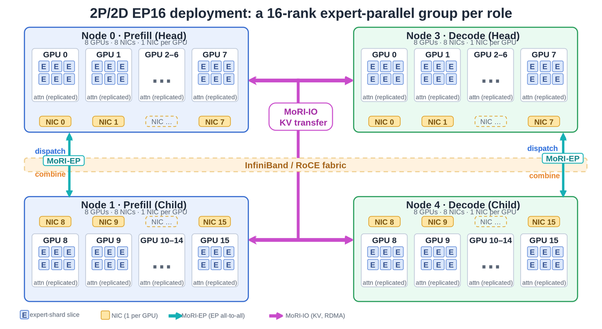
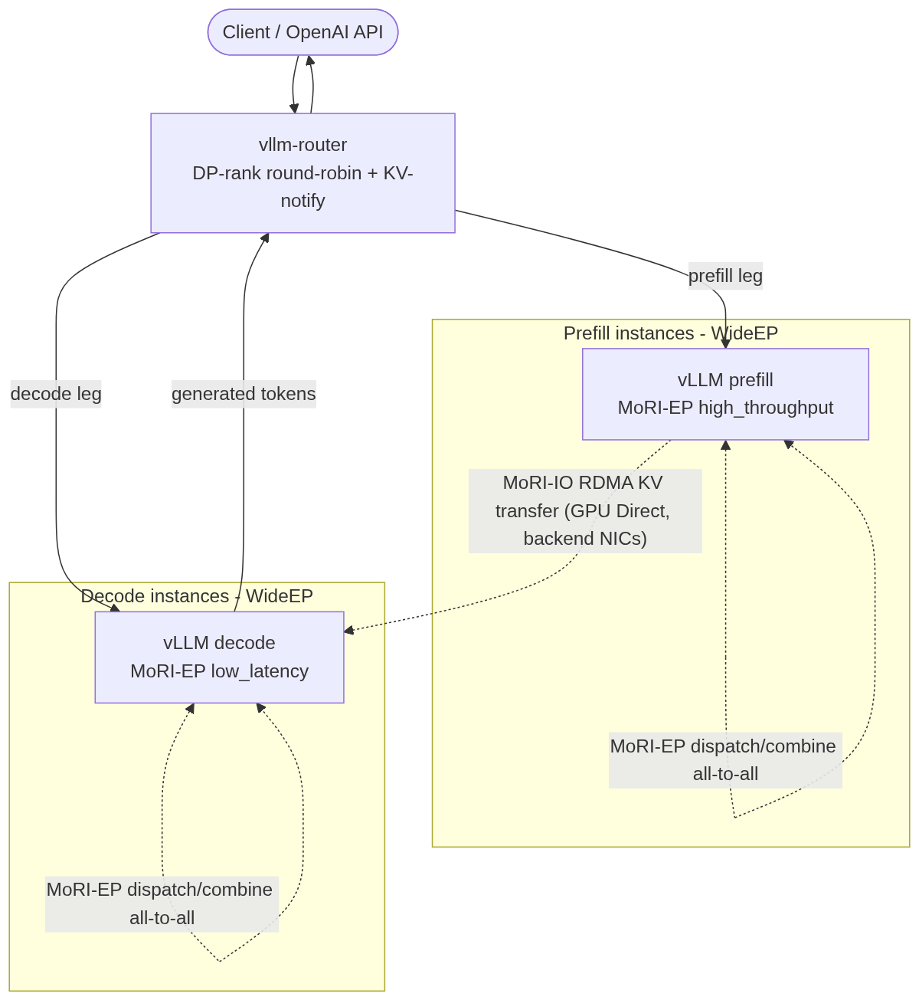
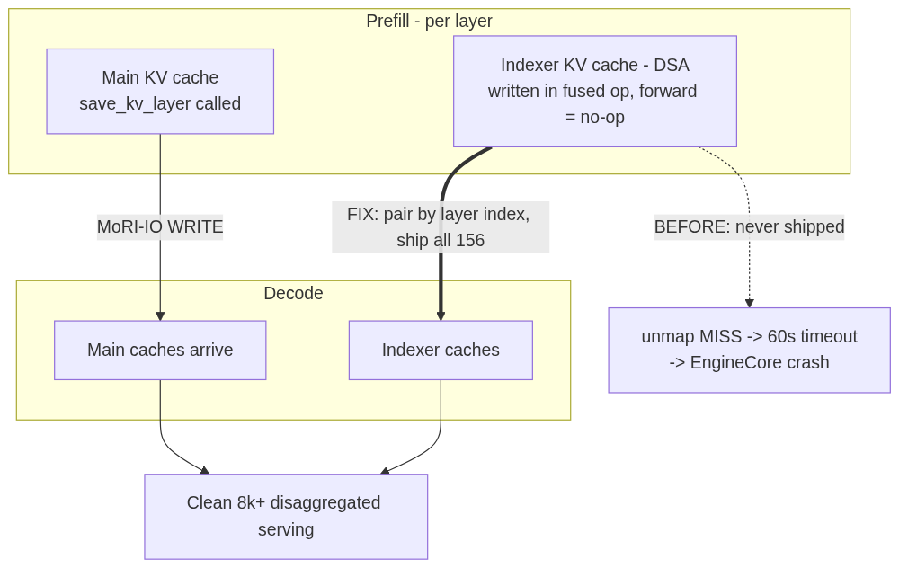
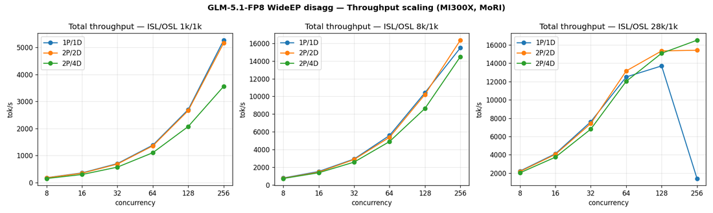
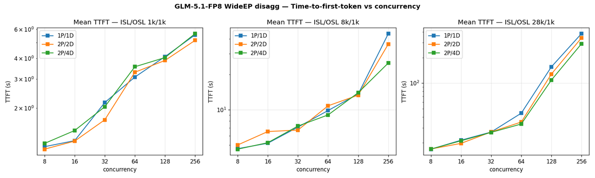
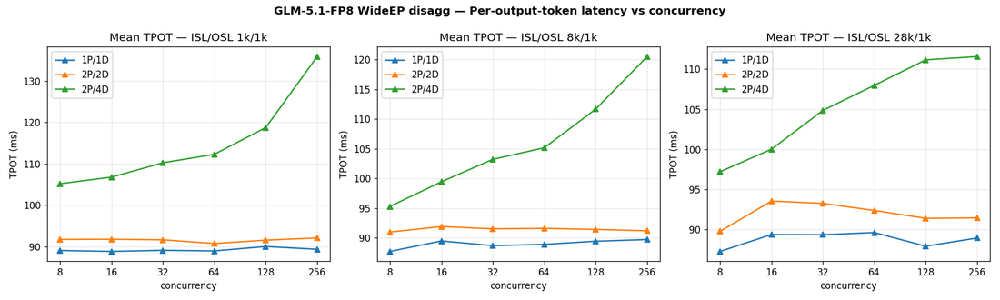
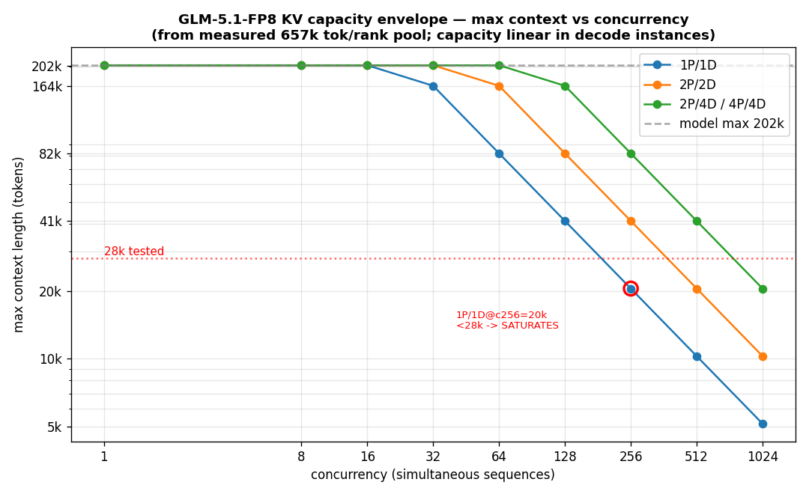

服务好前沿Mixture-of-Experts（MoE）模型是系统问题，一旦单节点不够就变得更难。GLM-5.1是很好的例子：它是个大而稀疏的MoE，用户想在长上下文上跑，而且它带一个新attention family，打破了旧serving栈默默依赖的假设。把它塞进八张GPU只是开始。真正的问题是跨几个节点扩展时如何保持正确和快。
这篇演示如何把GLM-5.1-FP8带到AMD Instinct™ MI300X上做prefill-decode（PD）分离serving +wide expert parallelism（WideEP），用vLLM内的AMDMoRI通信栈。过程中覆盖两个只在分离和scale-out后出现的生产阻塞缺陷，以及两者的修复。
结果是正确长上下文serving和干净吞吐扩展，跨四种拓扑：从单prefill/decode对（EP8）到prefill和decode all-to-all路径都是EP32。
*这是AMD Disaggregated Inference（DI）博客系列第一篇，把前沿开源模型从单节点demo带到AMD Instinct™ GPU上的生产多节点serving。*
以下要点总结这篇的主要结果和修复：
GLM-5.1-FP8（GlmMoeDsaForCausalLM，Multi-head Latent Attention +DeepSeek Sparse Attention）已在MI300X上启用PD-分离WideEP serving，MoRI-EP扛MoE all-to-all、MoRI-IO扛RDMA KV-cache传输。
两个生产阻塞缺陷已修复：约30k token后的长上下文准确率崩溃，以及由GLM-5.1稀疏attention引入的第二套易漏KV cache导致的8k-prefill分离崩溃。
长上下文检索在每种测试拓扑上都通过：1P/1D（EP8）、2P/2D（EP16）、1P/4D和2P/4D（decode EP32）、4P/4D（两侧EP32），覆盖完整2k-35k范围，DeepSeek-V3在共享栈上无回退。
完整72-cell基准矩阵（4拓扑 × 3形状 × 6并发）。峰值16,525 tokens/s（2P/4D、28k输入、并发256）。
决定性发现是可从第一性原理预测的容量墙：28k输入 + 并发256时，单decode实例塌到1,405 tokens/s，比多decode拓扑慢11.8×，因为其KV工作集超出池。一个闭式KV-capacity模型复现墙出现的位置，把「我需要几个节点？」变成算术。
图1展示这篇所基于的代表性2P/2D（EP16）部署。
推理有两个性格相反的阶段。Prefill在一次compute-heavy pass里读整个prompt。Decode然后一次一个token输出，受内存带宽限制。两者跑在相同GPU上就互相干扰：一阵长prompt爆发阻塞每个人的token生成（head-of-line blocking），负载下inter-token延迟飙升。
PD分离把两阶段放独立实例，各可自行定大小、并行化、调度。prefill-heavy流量不再拖慢稳定decode流。
那个拆分引出第二个问题：如何把256-expert MoE分布到所有这些GPU？tensor-parallel-only布局分片和同步每层，对每token只激活少数专家的模型是浪费。WideEP相反把专家摊到各rank。每GPU持一片，只把每token路由到拥有其专家的rank。加节点时expert-parallel（EP）宽增长，在专家间shuffle token的all-to-all必须跨网络保持正确和快。那个传输正是MoRI提供的。
> 单节点并行背景（TP、DP、EP）、DP attention、何时 --enable-expert-parallel有用，见vLLM MoE Playbook。这篇从它停下的地方继续，跨节点扩展。
拓扑用xPyD记法：x个prefill实例、y个decode实例，每实例一个8-GPU MI300X节点。EP宽 = 实例数 × 8，所以1P/1D是EP8、2P/2D是EP16、加decode实例（2P/4D）把decode侧推到EP32。

MoRI库扛两种流量模式：

MoRI-EP：跨EP rank的MoE dispatch和combine all-to-all。vLLM为prefill（大token batch）选高吞吐kernel、为decode选低延迟kernel。
MoRI-IO：从prefill到decode的远程直接内存访问（RDMA）GPU-Direct KV-cache传输。流量落在八个GPU-local backend NIC上，均匀平衡，两个front-end NIC不承载。KV路径用该用的fabric。
图2（左）显示PD-分离WideEP serving的请求路径（router把每个请求的prefill和decode腿钉到稳定DP rank）；图3（右）显示GLM-5.1稀疏attention引入的额外KV cache：工程一节详细讲。
GLM-5.1-FP8是个大而稀疏的MoE：78层（3 dense、75 MoE）、256 routed experts（top-8）加一个shared expert，FP8量化block-128缩放。其架构id GlmMoeDsaForCausalLM是关键细节：它组合Multi-head Latent Attention（MLA） 与DeepSeek Sparse Attention（DSA）。

DSA是让GLM-5.1值得服务、也是搞坏现有栈的东西。为决定每个query关注哪些token，DSA维护每层第二套KV cache：一个稀疏「indexer」k-cache，DeepSeek-V3没有的。那个额外cache在常规代码路径里不可见，结果成了下面分离崩溃的根因。
在分离和WideEP下bring up新attention family是工程问题，不是配置变更。两个缺陷阻塞生产；现在都修了。
问题1：长上下文准确率约30k token后崩溃。 症状：生成到约30k token前正确，然后产出错误输出（vLLM issue #47042）。 根因：持久work-stealing sparse-MLA kernel把attention元数据key到在chunked prefill下碰撞的值上。两个在途请求可映射到同一key，一个请求能复用另一个的context。这正是只在真实batching下长上下文才现形的bug。 修复：vLLM #47766把元数据缓存key到per-request (context_len, query_len) 对上。这保持快速持久kernel开着且正确，而非早期workaround（#47567）禁用kernel放弃性能。带 #47766，AITER persistent gqa64 fold路径被使用，stock ROCm和AITER无fork工作。
问题2：8k-prefill分离崩溃。 症状：8k+ prefill的分离运行崩溃prefill EngineCore。 根因：这是DSA第二套KV cache回来咬人。indexer cache写在 *fused op内部*，所以indexer模块的forward() 实际是no-op。它从不调用save_kv_layer。MoRI-IO connector传输任何经save_kv_layer注册的东西，所以那78个indexer caches从没被ship到decode。decode然后等永不到达的KV，撞unmap MISS，60秒deferred-write timer到期后prefill EngineCore崩溃。 修复：按层索引配对每个主cache与其indexer cache，一起传输（78主 + 78 indexer =156 caches），加上vLLM branch携带的DP-rank KV-notify修复。8k及以上的分离serving干净了。
验证覆盖四种拓扑：1P/1D（EP8、2节点、16 GPU）、2P/2D（EP16、4节点、32 GPU）、2P/4D（EP16 prefill、EP32 decode、6节点、48 GPU）、4P/4D（两侧EP32、8节点、64 GPU），用needle-in-a-haystack（NIAH）检索验准确率、vllm bench serve测吞吐和延迟。所有运行用同一from-source镜像。
NIAH分数（每上下文长度10针中找到）：
这是头条正确性结果。带 #47766修复和DSA indexer传输，GLM-5.1在分离serving下跨整个2k-35k范围正确回答长上下文needle查询，包括之前塌到近零的28k-35k带。偶尔的7-9/10是单针方差，不是长度崩溃；修复前签名完全消失。
| Topology | 2k | 8k | 16k | 20k | 28k | 35k |
|---|---|---|---|---|---|---|
| 1P/1D (EP8) | 10 | 10 | 9 | 9 | 9 | 10 |
| 2P/2D (EP16) | 10 | 10 | 9 | 8 | 9 | 10 |
| 2P/4D (EP32 decode) | 10 | 10 | 9 | 9 | 8 | 10 |
| 4P/4D (EP32 both) | 10 | 10 | 8 | 9 | 7 | 10 |
如图4所示，1k和8k输入下吞吐近线性随并发扩展。c8→c128步在每拓扑增益13.5-15.4×（理想16×），所以batching高效、分离不加扩展惩罚。更长输入提高总token吞吐因为每请求带更多prefill token；全矩阵峰值16,525 tokens/s（2P/4D、28k输入、并发256）。

有趣形状是长输入。完整28k/1k表如下。看最后一列：
| Topology | c8 | c16 | c32 | c64 | c128 | c256 |
|---|---|---|---|---|---|---|
| 1P/1D | 2,219 | 4,111 | 7,613 | 12,506 | 13,715 | 1,405 |
| 2P/2D | 2,170 | 4,043 | 7,414 | 13,166 | 15,353 | 15,429 |
| 2P/4D | 2,026 | 3,737 | 6,804 | 12,027 | 15,097 | 16,525 |
| 4P/4D | 2,023 | 3,745 | 6,676 | 11,912 | 14,470 | 15,337 |
28k输入 + 并发256时，单decode实例（1P/1D）掉到1,405 tokens/s，比最佳拓扑慢11.8×，而每个多decode拓扑保持全吞吐。

这不是温和回退。是regime change。TTFT说同样故事：1P/1D的28k × c256 TTFT是382 s（深抢占队列）对比更大拓扑的290-340 s。关键地，TPOT不升。Per-token decode仍快；序列被抢占因为它们不再装进内存。下一节显示这墙正出现在简单容量模型说它必须出现的地方。

延迟：decode持平，TTFT是可调旋钮。关键延迟故事在TTFT（图5）：它随并发和输入长度上升，符合预期。28k输入时随prefill队列加深陡增。那是操作员通过设并发限制对吞吐权衡的自然旋钮。
TPOT（稳态per-output-token延迟；图6）随并发惊人地平：1P/1D约89 ms、2P/2D约91 ms、2P/4D约105-120 ms。那个平正是分离的全部意义：decode在负载下保持稳定，因为prefill爆发落在独立实例、不能阻塞token生成。
读拓扑。1P/1D和2P/2D是GPU最有效的：短中上下文下每GPU几个百分点内跟踪。2P/2D是推到长上下文高并发前的最强平衡操作点。2P/4D和4P/4D（四个decode实例）在1k/1k带 +25-26% TPOT惩罚（约89 ms → 约112 ms，token循环里跨节点decode EP32 all-to-all的成本）。那惩罚买来长上下文关键的decode KV headroom：2P/4D恰在1P/1D剧跌处发布矩阵峰值（16,525 tokens/s at 28k × c256）。
GLM-5.1-FP8在整个测试的expert-parallel范围正确检索，EP8到EP32，在prefill和decode all-to-all两条路径上。这是强扩展信号：MoRI-EP dispatch/combine和MoRI-IO KV传输在EP加宽时保持正确。1P/4D只出现在这张表做准确率覆盖；它用NIAH验证正确性，但不属于表2的吞吐扫描。
| Topology | Prefill EP | Decode EP | NIAH |
|---|---|---|---|
| 1P/1D | 8 | 8 | Pass |
| 2P/2D | 16 | 16 | Pass |
| 1P/4D | 8 | 32 | Pass |
| 2P/4D | 16 | 32 | Pass |
| 4P/4D | 32 | 32 | Pass |
跌落不是谜。是算术。vLLM报告测得的per-rank KV pool（657,000 tokens/decode rank），GLM-5.1的per-token KV成本固定：MLA latent（576 B）加DSA indexer（128 B），跨78层，FP8下53.6 KiB/token。所以拓扑能让所有在途序列驻留的最长上下文可用闭式表达：

容量对decode实例线性、对并发反比。那个单一公式复现每个测量（图7）：
max_context = 657,000 x 8 x (decode instances) / concurrency (tokens, full pool)
= 5.26M x (decode instances) / concurrency (capped at the model's 202k limit)预测与运行匹配。28k输入 + 并发256：1P/1D天花板20k< 28k，所以饱和（测1,405 tokens/s、TTFT 382 s）；2P/2D的41k > 28k，所以完成（15,429 tokens/s）；四decode拓扑坐约35% KV-pool利用（16,525和15,337 tokens/s）。墙落在pool说它必须落的地方。
反过来，模型变成定尺寸工具。要在目标并发服务模型完整202k上下文：
在并发256维持满202k上下文需要约10个decode实例（约80 GPUs）：一个纯从测得数导出的具体多节点目标，不是猜。这是scale-out的定量论证。
| Topology | decode ranks | KV pool | max context @ c256 |
|---|---|---|---|
| 1P/1D | 8 | 5.26M tok | 20k |
| 2P/2D | 16 | 10.5M tok | 41k |
| 2P/4D / 4P/4D | 32 | 21.0M tok | 82k |
PR：ROCm/MAD #176：per-model Dockerfile（vllm_disagg_inference.glmv5.1）、models.yaml recipe、MODEL_NAME-gated DSA runtime patchers。DeepSeek-V3镜像和代码路径未动（与develop byte-identical）。
镜像：from-source vLLM（WideEP WRITE-mode branch、#47766）+ stock AITER e03fa6040 + MoRI post-1.2.1 42e895472b08 + vllm-router（DP-rank round-robin + KV-notify）。
Serve flags：--tool-call-parser glm47 --reasoning-parser glm45 --enable-auto-tool-choice --chat-template-content-format string，block size 1、FP8 KV、AITER MLA on。
Harnesses：niah_nothink.py（准确率，thinking-aware，NIAH_SEEDS多seed）、run_topo_bench.sh（per-topology NIAH + perf）、kv_envelope_sim.py（容量模型）。每拓扑记录精确commits、节点、命令行。
总结：这篇把GLM-5.1-FP8带到AMD Instinct MI300X上WideEP PD-分离serving的正确高吞吐serving，跨1P/1D、2P/2D、2P/4D、4P/4D，由完整72-cell基准矩阵支撑。到达那里意味着修两个只在分离和扩展下浮现的缺陷：长上下文准确率崩溃（经vLLM #47766保持持久sparse-MLA kernel开着且正确解决）和8k-prefill崩溃（经配对并传输DSA第二套indexer KV cache解决）。你看到长上下文检索在prefill和decode all-to-all路径从EP8到EP32都成立，decode延迟负载下持平，以及单decode实例28k上下文超高并发的硬限制不是缺陷而是容量边界：由测得KV pool预测、加decode实例清除。
| Concurrency | Decode instances | GPUs |
|---|---|---|
| 16 | 1 | 8 |
| 64 | 3 | 24 |
| 128 | 5 | 40 |
| 256 | 10 | 80 |
参考：https://rocm.blogs.amd.com/software-tools-optimization/di-glm-wideep/README.html